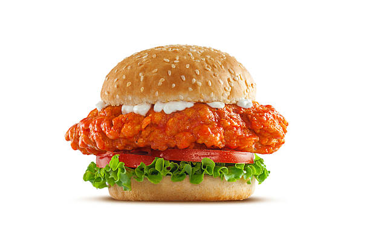

Home
Spicy Buffalo Chicken Sandwich

Description
This spicy Buffalo chicken sandwich recipe gives you a healthier take on the game-day fave so you can get your wing fix — without getting your hands dirty.
Ingredients
- 4 (5 ounce) skinless, boneless chicken breasts
- 1 cup bottled Buffalo wing sauce
- salt and ground black pepper to taste
- 1/4 cup olive oil
- 4 Ball Park Golden Hamburger Buns
- 4 leaves Bibb lettuce
- 4 slices beefsteak tomato
- 1/4 cup blue cheese salad dressing
Steps
- Preheat an outdoor grill for medium heat and lightly oil the grate.
- Brush chicken breasts with wing sauce; season with salt and black pepper.
- Cook chicken breasts on the preheated grill, basting with wing sauce, until no longer pink in the center, the juices run clear, and fully cooked. An instant-read thermometer inserted into the center should read at least 165 degrees F (74 degrees C).
- Drizzle each hamburger bun with 1 tablespoon olive oil; grill until golden brown.
- Arrange 1 lettuce leaf on each bottom bun; top each with 1 tomato slice, 1 chicken breast, 1 tablespoon blue cheese dressing, and top bun.